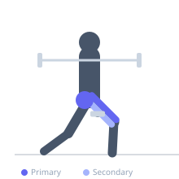

Exercise guide / Step-Up
Step-Up
The step-up is a unilateral lower body exercise in which the lifter steps onto a raised platform with one foot and drives through that leg to bring the body fully upright on top of the box. It trains single-leg strength and hip stability and closely mimics functional movements such as stair climbing. Load can be added with dumbbells, a barbell, or a weighted vest.
Primary muscles
rectus femoris
vastus lateralis
vastus medialis
gluteus maximus
Secondary muscles
gluteus medius
biceps femoris long head
Stabilizers
tensor fasciae latae
transverse abdominis
Equipment
No Equipment (Bodyweight)
Optional
Dumbbell (Fixed)


Starting position
- Stand facing a box or sturdy bench of appropriate height (typically 30–60 cm). Hold dumbbells at the sides if adding load.
Setup
- Choose a box height that challenges but allows the working thigh to be near parallel when the foot is placed on top. A higher box increases glute and hip demand.
Steps
- Step 1: Place one foot fully on the box — the entire foot, not just the toes.
- Step 2: Drive through the heel of the working foot to push the body upright and bring the trailing leg up.
- Step 3: Stand tall on top of the box with hips extended and working leg straight.
- Step 4: Lower the trailing leg back to the floor in a controlled manner by bending the working knee.
- Step 5: Complete all reps on one side before switching.
Coaching cues
- Drive through the heel, not the toe
- Don't push off the back foot — make the front leg do the work
- Stand tall at the top — full hip extension
Breathing
- Exhale as you step up. Inhale as you lower down.
Range of motion
- Fully extend the hip and knee at the top. Control the entire descent.
Tempo
- 1-0-2-0 (drive up quickly, lower slowly)
Common mistakes
- Pushing off the trailing leg — the step-up should be powered entirely by the working leg
- Only placing toes on the box, reducing stability
- Leaning excessively forward on the way up
Safety
- Ensure the box or bench is stable and cannot tip
- Step fully onto the box before beginning the drive phase
Training
- strength: 5–8 reps
- hypertrophy: 10–15 reps
- endurance: 15–25 reps
- strength: 3–4 sets
- hypertrophy: 3–4 sets
- endurance: 2–3 sets
- Rest: {'strength': 120, 'hypertrophy': 60, 'endurance': 45}